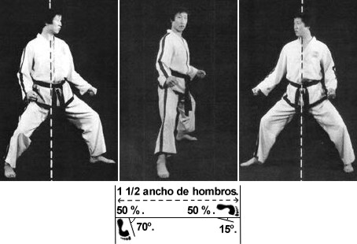

Segun el programa tecnico de la asociacion debera responder las siguientes preguntas.
¿Cual de las siguientes es una forma correcta de saludar?
¿De que manera estan bien ordenados de menor a mayor los siguientes numeros?
¿Que nueva posicion aparece al grado de 5to Gup?
Segun la siguiente imagen
¿Como se llama la posicion?
¿Como se llama el lugar de practica?
¿Como se llama la forma (Tul) correspondiente al cinturon Verde punta azul?
¿Como fue apodado el Maestro Yil?